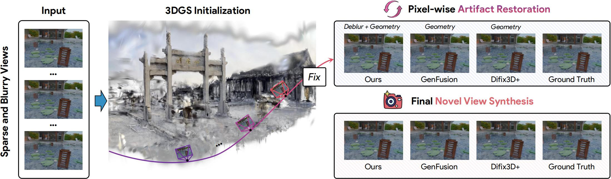
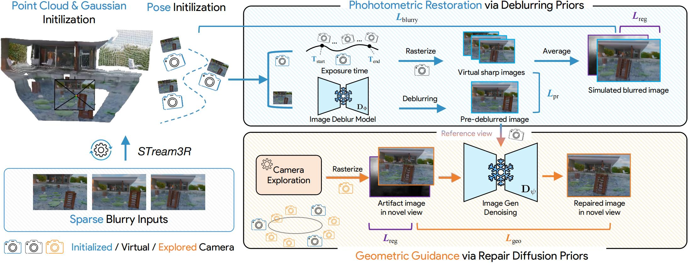

📌 Abstract

3D Gaussian Splatting (3DGS) has emerged as a state-of-the-art method for novel view synthesis. However, its performance heavily relies on dense, high-quality input imagery, an assumption that is often violated in real-world applications... (此处省略部分文本，保持原意)... Our results demonstrate that CoherentGS significantly outperforms existing methods, setting a new state-of-the-art for this challenging task.
Method Overview

The overview of our CoherentGS framework. It employs a dual-prior strategy for joint 3D reconstruction and enhancement...
Video Presentation
Qualitative Comparisons
vs. 3DGS-based Methods
Baseline A
Baseline B
CoherentGS (Ours)
vs. NeRF-based Methods
NeRF Method 1
NeRF Method 2
Ours
Novel View Synthesis Results